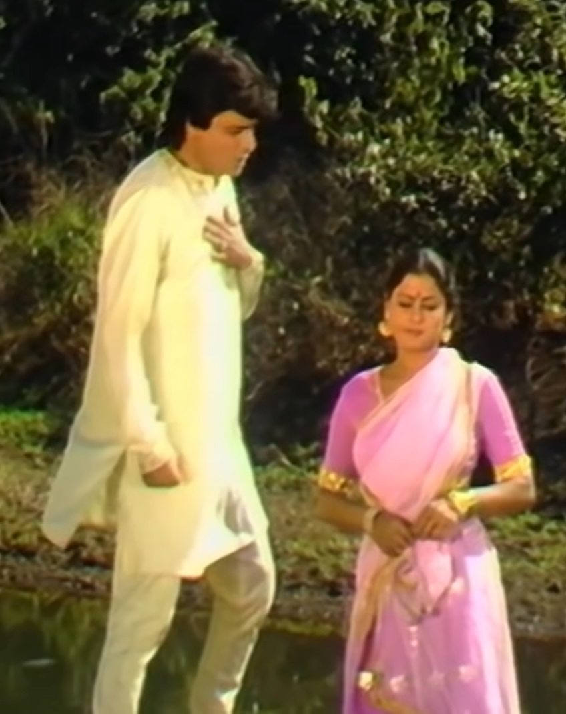
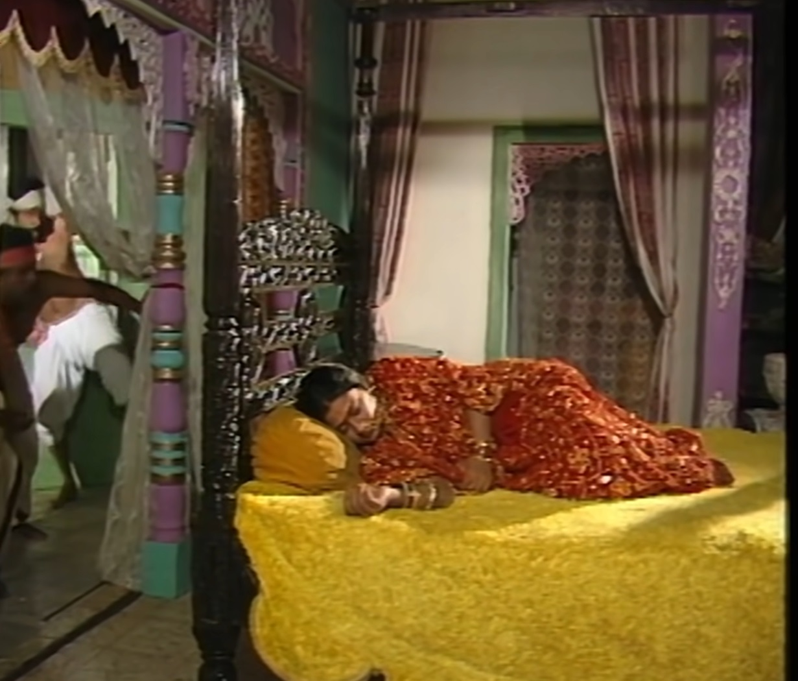

| Vikram catches Betal again and carries him on his shoulder. Betal again hears a story from Vikram in which a town named Anantapur In which a young man named Dharamdutt was in love with a girl named Madansena. used to do. He didn't want to live without her. He expressed his love to her. Expresses this but Madanasena refuses him so Dharamdutt takes his life. Talks about giving up and jumps into the river to save Madansena. She jumps after him and takes him out. even after saving him Madanasena rejects his love. Samudradatt's parents love their son Goes to Madansena's house with a relation of Rs. Dharmadutt tells Madansena that If she does not come to meet him on Poonam night then he will kill himself. Will give. Madansena goes to her home and gets married to Samudradatt. He goes and both of them get married. Samudradatt Madansena in his Take it with you and reach your home. There were two thieves in his town, they were in his house While coming to steal, a thief sees Madansena sleeping and seeing him Mohit gets fascinated then some girls come there to hide from him. Both the thieves hide. A girl sees them and screams 'thief thief' So both of them run away from there. Thief Madan gets lost in the thoughts of Sena Is. Madansena is worried about Dharamdutt because on the night of Poonam Dharamdutt had talked about sacrificing his life. As soon as Madansena came from there When she goes, Samudradatt comes there and asks her where she is going. Madansena tells him that she is going to meet Dharamdutt and If she does not go, Dharamdutt will sacrifice his life and for this he will never sacrifice himself. Will not be able to forgive. When Madanasena asks permission from Samudradatta to go, He gets angry and asks him to leave and follows him with the sword. Does matter. |  |  | As soon as Madansena comes out of the city, the thief sees her and stops her. Takes and does not let go. Madansena requests him to Let go otherwise Dharamdutt will kill you. Thief Madansena to let go on one condition She says that she will meet him also while returning. Madansena his talk She accepts and moves ahead. The thief also follows Madansena. Madanasena reaches Dharmadutt's house as soon as Madanasena finds the bride. When Vermilion Dharamdutt sees me dressed up and in demand, he asks What is all this? Madansena tells him that she is getting married today. Hearing about Madansena's marriage, Dharamdutt asks her why she came here. When she is married she should go back to her husband's house. not right. And I can't even love you anymore because now you're someone You are someone else's wife and loving you is a big sin. Dharamdutt Madansena When he asks her to leave, she returns. All these thieves and Samudrat Were also watching and listening. When Madansena returns, the thief stops her And says that can it happen in this world that a husband can marry his wife? But believe so much that on your wedding night you will see your wife in her Send him to meet his lover and there he meets the woman's lover who Seeing his beloved married, he considers it a sin to even talk about love to her. Thief He was shocked to see and hear all this, so he lets Madansena go and He says that the sin that arose in my mother after seeing you, is the same after seeing you. Sin itself is erased. Samudradatt stopped his wife Madansena on the way. Takes it and tells him that he came after her and you thought he was a cheater and Considering you a woman of bad character, but you are very calm and pure. And how much kindness you have in your heart. |